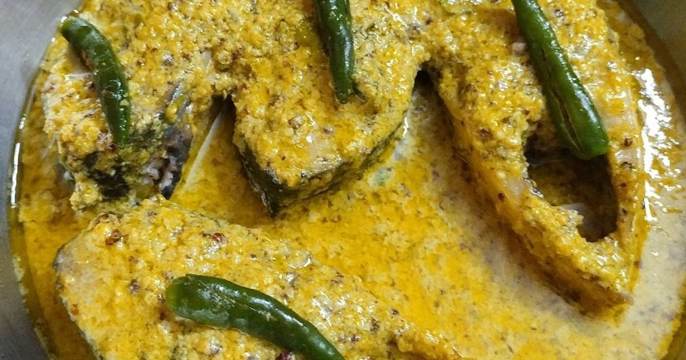

Illish Bhapa

Description
Illish is a saltwater fish (known as hilsa in English) that is found in sweetwater during its breeding season. It is the main ingrdient of many popular fish dishes in India and Bangladesh.
Illish Bhapa is steamed illish. It is single pot dish and is very easy to cook.
Ingredients
- Illish (ideally 1 kg, about 8 pieces)
- Mustard seeds 100 g (black and gold)
- poppy seeds 50 g
- Mustard oil
- Salt 1.5 tbsp
- Green chilli 8 pieces
Steps
- Soak the mustard in water to get rid of the bitter taste.
- Cut and wash the fish.
- Make a paste of mustard, poppy seeds, and four green chillis. Add salt in the mixture.
- Coat the fish in the mixture and put them in a pot. Add most of the mustard oil.
- Close the pot and steam cook the fish for about 15 minutes.
- Put the green chillies on top before serving.